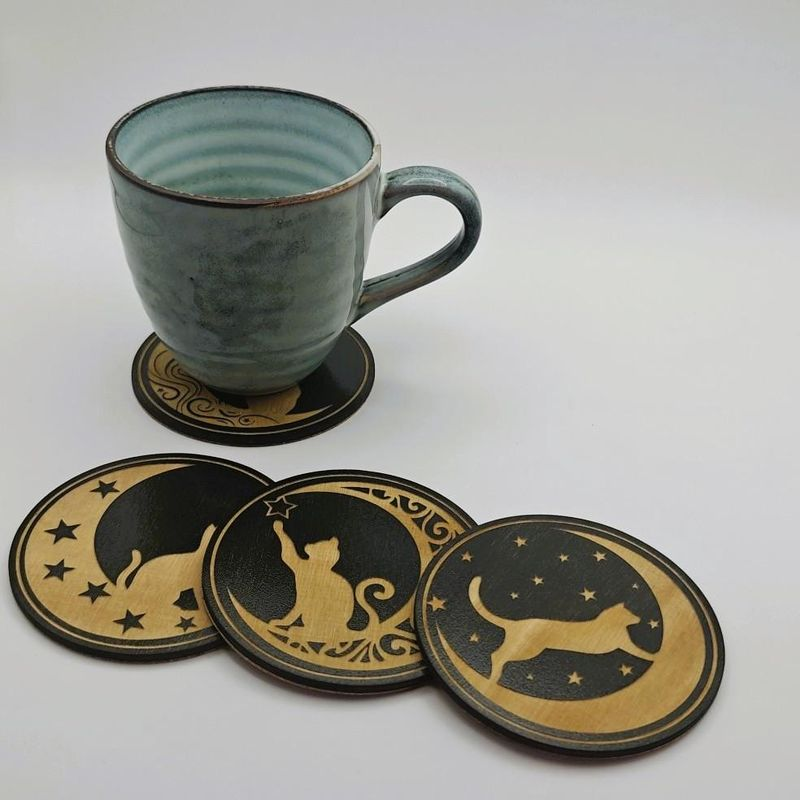
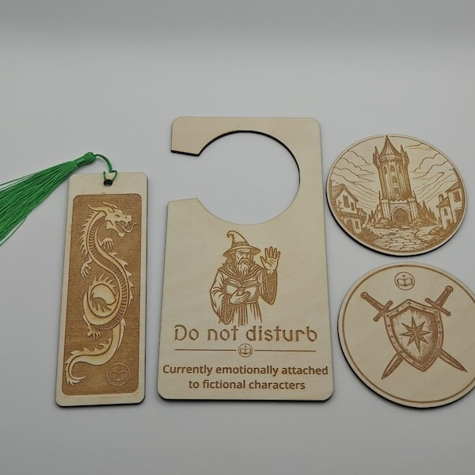
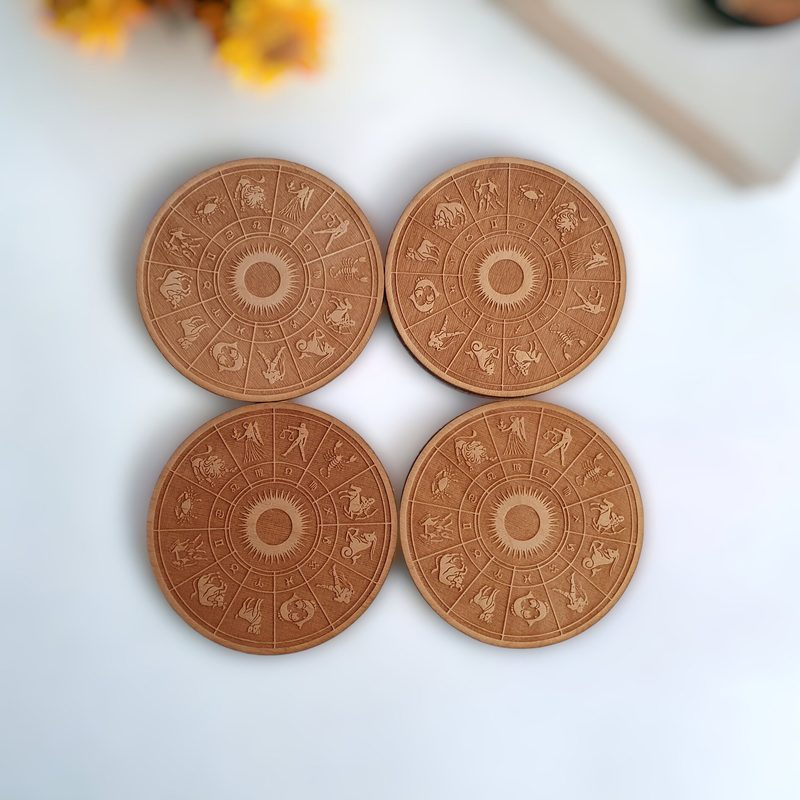
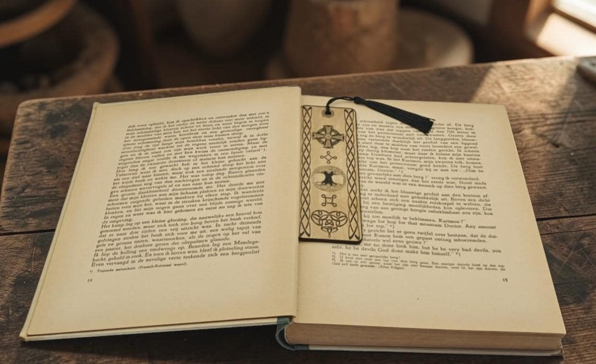
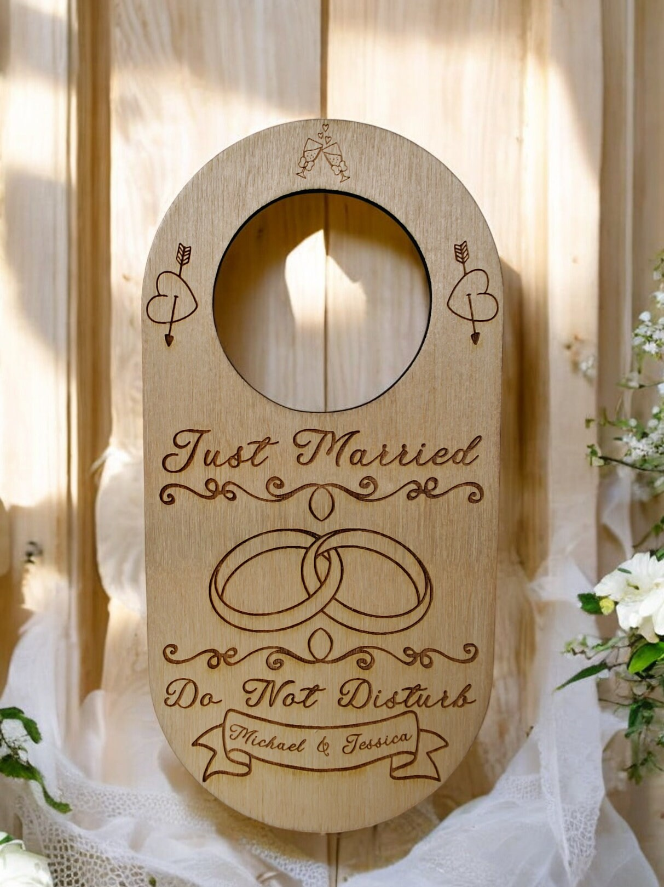

Sous-verres en bois Arbre de vie
Commencez par les pièces les plus choisies : des sous-verres gravés, des marque-pages et quelques idées cadeaux pleines de caractère à comparer tranquillement avant de poursuivre sur Etsy.
Voyez d'abord les sets de sous-verres les plus appréciés, puis explorez par occasion ou par collection si vous voulez plus d'options.


Commencez par les thèmes cadeaux les plus recherchés.
Allez directement vers des sous-verres et objets déco sur le thème du chat pour maisons chaleureuses et anniversaires.

Découvrez des marque-pages, des coffrets pour lecteurs de fantasy et des objets pour coins lecture pensés pour les amoureux des livres.

Parcourez des pièces en bois utiles pour tables basses, étagères et cadeaux de maison bien choisis.

Trois bonnes options pour partir d'un choix déjà apprécié.
Un set parmi les meilleures ventes qui apporte un détail chaleureux à une table basse, une étagère ou un cadeau de crémaillère.
Voir Sous-verres en bois Arbre de vie sur Etsy
Un modèle céleste pour tables du soir, intérieurs cosy et cadeaux au style visuel affirmé.
Voir Sous-verres en bois Soleil et lune sur Etsy
Un set gravé au style nordique pour décors inspirés des sagas, bureaux et cadeaux plus marqués.
Voir Sous-verres en bois vikings sur EtsyVous avez déjà l'occasion en tête ? Commencez ici.
Sous-verres et déco en bois sur le thème du chat pour intérieurs chaleureux, anniversaires et surprises attentionnées.
Cadeaux pour amoureux des chatsMarque-pages, coffrets pour lecteurs de fantasy et objets déco pensés pour les lecteurs et les étagères chaleureuses.
Cadeaux pour lecteursSous-verres en bois et accents déco faciles à offrir pour nouveaux logements, appartements et cadeaux d'hôte.
Cadeaux de crémaillèreVous préférez partir du type de produit ? Explorez les collections principales.

Des sets de sous-verres appréciés, entre motifs célestes, nature, inspirations nordiques et autres designs marquants pour tables, étagères et cadeaux de crémaillère.
Sous-verres en bois
Des marque-pages pensés pour les lecteurs, les amateurs de fantasy, les carnets de lecture et les soirées calmes.
Marque-pages en bois
Suspensions de porte, porte-bougies, souvenirs et objets déco pour étagères, entrées et cadeaux marquants.
Cadeaux en boisUne explication rapide, placée plus bas pour laisser les produits au premier plan.
Cette page d'accueil met les idées cadeaux les plus claires au premier plan pour aider à choisir plus vite.
Utilisez les guides cadeaux si l'occasion compte d'abord, ou passez aux collections si le type de produit compte davantage.
Quand quelqu'un est prêt, le bouton mène vers Etsy pour les prix, les avis, la personnalisation, l'expédition et le paiement.
Quelques avis courts qui renforcent la confiance.
"Un vrai plaisir d'échanger avec cette boutique... je reviendrai volontiers."
"Très belle qualité, conforme à la description, avec une vendeuse aimable et claire."
"Ces sous-verres sont magnifiques. Ils semblent solides et bien faits."
"Le niveau de détail est superbe, la finition est soignée et le marque-page est très durable."
Des réponses rapides avant de passer sur Etsy.
Non. Ce site aide à découvrir la collection puis envoie les visiteurs vers Etsy pour finaliser la commande.
Oui. La messagerie Etsy est le meilleur endroit pour demander un prénom, une date ou un petit détail personnalisé avant l'achat.
Commencez par les catégories mises en avant si l'occasion est claire, ou par les meilleures ventes si vous voulez une option déjà éprouvée.
Les délais d'envoi, les détails des fiches produit et le paiement restent sur Etsy, où l'acheteur peut tout vérifier avant de commander.